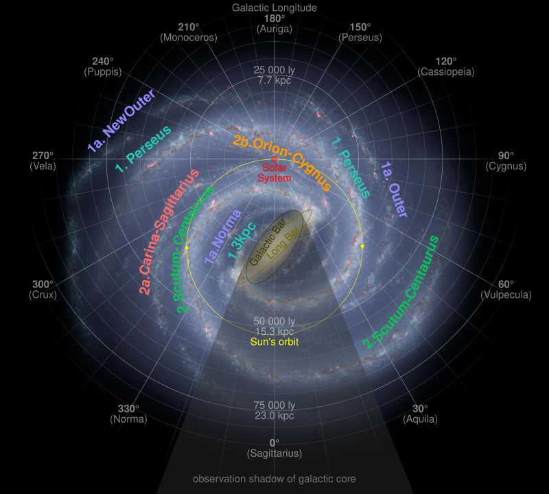
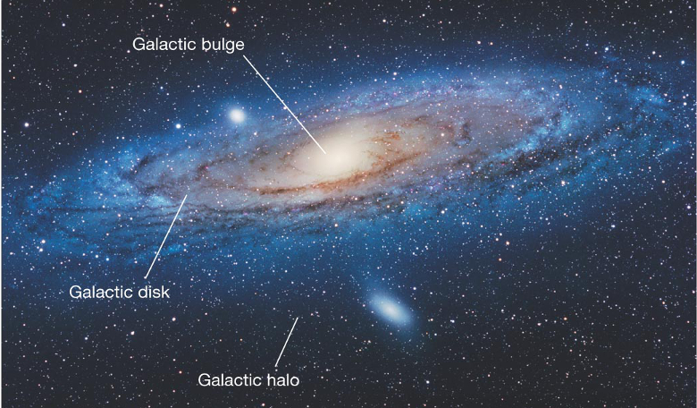

The Milky Way is a vast spiral galaxy that is home to our solar system. It is estimated to contain hundreds of billions of stars and is one of billions of galaxies in the observable universe. The Milky Way is a barred spiral galaxy, meaning that its spiral arms are connected to a central bar of stars.
The Milky Way is made up of several components, including:
These are long, winding arms of stars, gas, and dust that extend from the central bar of the galaxy. The Milky Way has four major spiral arms: the Perseus Arm, the Cygnus Arm, the Sagittarius Arm, and the Norma Arm.
This is a dense, spherical region of stars at the center of the galaxy. It is thought to contain a supermassive black hole, which is a black hole that is millions or billions of times more massive than the Sun.

This is a spherical region of stars, gas, and dust that surrounds the galaxy. The halo is thought to be the oldest part of the galaxy and contains many globular clusters.
This is a flat region of stars, gas, and dust that surrounds the central bulge. The disk is where most of the galaxy's stars and gas are located.
